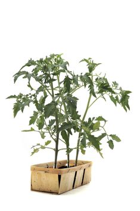
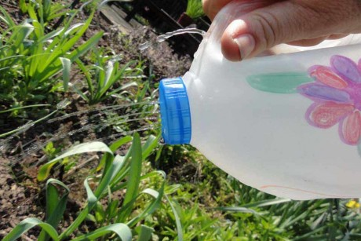
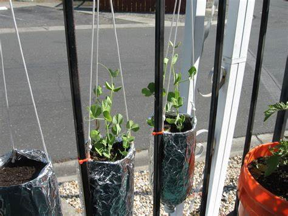
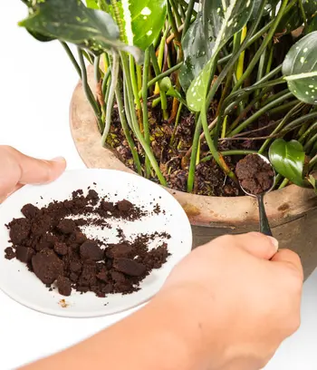

Welcome to the Tips & Tricks tab!! Here we will show you all the tips and all the tricks to get that gaden growing and looking good.
Tip number 1
if you like to grow tomato and you want to begin growing them, the easiset way to grow these tomatos are to put them in a contanier or pot. 
Tip number 2
One trick i like to use is turning a plastic milk jug into a watering jug. i find this very useful and it works just like an actul watering container

Tip number 3
Bottle gardening can be very useful for when you have had a long day and and very tired. This bottle gardening technique does self-watering by letting the plant hang by a sting in the bottle and getting water by itself. 
Tip number 4
this is the final tip and it is to use coffee grounds. this works just like a fertilizer becasue it adds nutients and makes texture and drainage better for the soil. Its very great! 